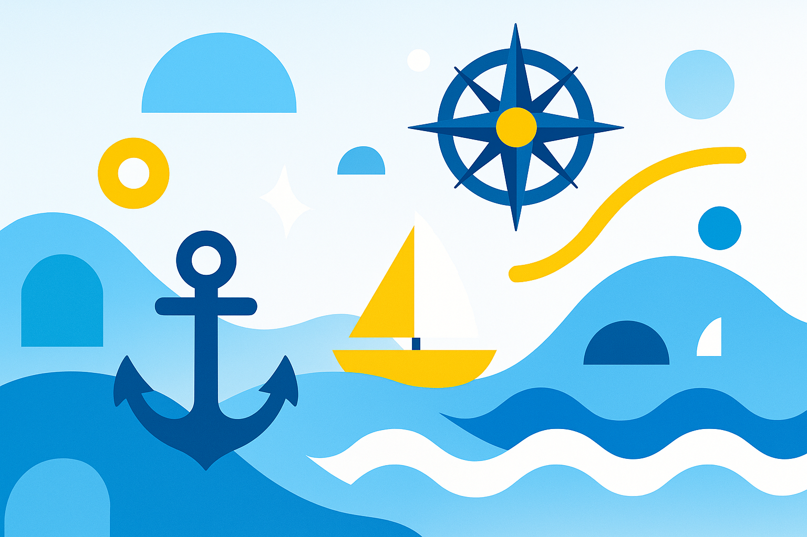

Sumérgete en la
Mecánica de Fluidos
¡Bienvenido a bordo!
Hoy te conviertes en un navegante que se embarga en una travesía única: descubrir los misterios de la
mecánica de fluidos.
En este viaje surcarás mares cambiantes y visitarás islas llenas de secretos para develar los secretos
de los mares, ríos y vientos.
¿Listo para izar velas y comenzar la exploración?
